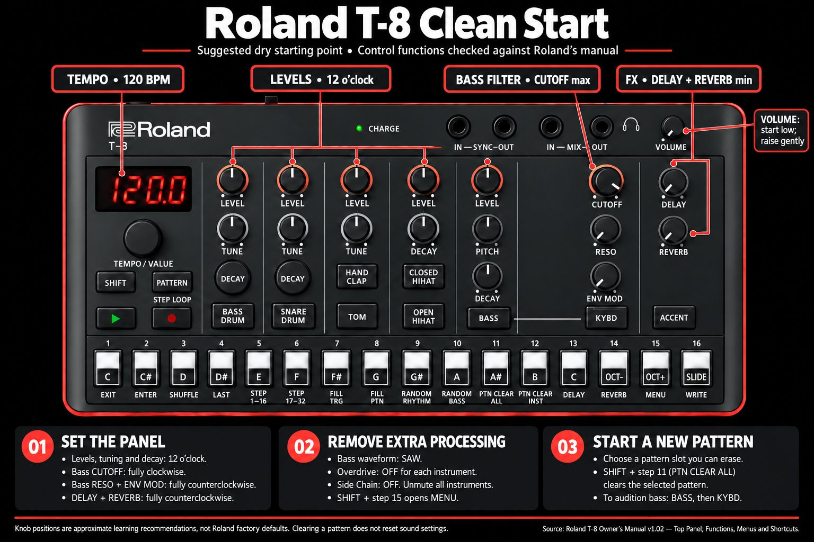
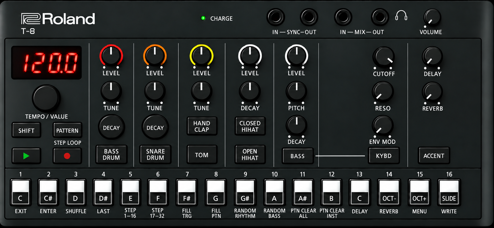

This course teaches you how the T-8 makes a beat and a bass line. You do not need to know anything first. Each lesson is short and builds on the one before it. Every fact comes from Roland's T-8 Owner's Manual (version 1.02) or Roland's own web pages. Where the manual is silent, the page says so.
1. Turn your headphones down before you start. Drums get loud fast.
2. Change one thing at a time. Listen. Then change the next thing.
We say knob positions like a clock. 7 o'clock is all the way left, the lowest setting. We also call it MIN. 5 o'clock is all the way right, the highest setting. We call it MAX. 12 o'clock is straight up, the middle.
The 16 white buttons along the bottom are the step buttons. Roland prints two names on each one: a note name like C#, and a job like ENTER. We write them as the manual does: [C# (ENTER)]. Step 1 is the left-most button, [C (EXIT)]. Step 16 is the right-most, [SLIDE (WRITE)].
The seven big grey buttons in the middle are the instrument buttons: BASS DRUM, SNARE DRUM, HAND CLAP, TOM, CLOSED HIHAT, OPEN HIHAT and BASS. The six drums are the rhythm. The bass is its own part.
You can pick a pattern, see whether it is empty, clear it, save it, undo a mess, and back up the whole T-8 to the Mac.
On the T-8 a drum part and a bass part live together in one pattern. The manual says the two numbers "are recalled as a set". Think of a pattern as a slot.
There are 4 banks. Each bank has 16 patterns. That is 64 patterns, the number in the specifications. We write a pattern as bank-number, so 2-05 means bank 2, pattern 5.
| Bank | How we use it in this course |
|---|---|
| 1 (1-01 to 1-16) | Leave it alone. Listen to what is there. Never save here. |
| 2 (2-01 to 2-16) | Lesson slots. Lesson 03 saves to 2-03, Lesson 04 to 2-04, and so on. |
| 3 (3-01 to 3-16) | Your own beats. Save the ones you like here. |
| 4 (4-01 to 4-16) | Scratch. Mess around here. It does not matter if you wreck it. |
The T-8 manual never says which patterns come filled from the factory, or that any bank is protected. There is no lock. So we treat bank 1 as "look, do not touch", and we back up everything before the first lesson. The backup takes five minutes and makes every mistake fixable.
The T-8 has no "init". Clearing a pattern removes the notes and leaves every knob and menu setting as it was. So the course uses one clean start: a dry, plain panel you set by hand. Every lesson's "Set your T-8 like this" box starts from here.

| Area | Control | Set it to | Why |
|---|---|---|---|
| Common | TEMPO/VALUE | 120.0 | A medium tempo. Tempo is shared by all patterns. |
| Drums | every LEVEL | 12 o'clock | All drums equal, room to go up or down. |
| Drums | every TUNE, HIHAT DECAY | 12 o'clock | Middle pitch and length. |
| Drums | kick and snare DECAY buttons | off (unlit) | TUNE means pitch, not length. |
| Bass | LEVEL, PITCH, DECAY | 12 o'clock | Audible, middle pitch, medium length. |
| Bass | CUTOFF | MAX | Filter wide open. You hear the whole bass. |
| Bass | RESO, ENV MOD | MIN | No squelch, no filter movement yet. |
| Effects | DELAY, REVERB | MIN | Dry. No echo, no room. |
| Jacks | VOLUME | low, raise gently | Drums get loud fast. |
| Menu | b.WAv | SAW | The sawtooth bass. Lesson 07 compares it with square. |
| Menu | OdOn for each instrument | OFF | No overdrive. |
| Menu | SC | OFF | No side chain. |
| Menu | mutes | all off (buttons lit, not blinking) | Every instrument can sound. |
Menu items: hold SHIFT, press step 15 [OCT+ (MENU)], turn TEMPO/VALUE to the item, press the instrument button or [C# (ENTER)], turn to the value, press [C (EXIT)]. Lesson 04 and the Menu Map explain each one.
Read the step buttons while PATTERN is lit. The manual's table: lit = playing now, blinking = up next, dim = the pattern has something in it, unlit = the pattern is empty. That is how you tell an empty slot from a full one.
There is no "init" on the T-8. There is a clear. Hold SHIFT and press step 11, [A# (PTN CLEAR ALL)]. The manual says this "deletes the selected pattern". To clear only one drum, select that drum, hold SHIFT and press step 12, [B (PTN CLEAR INST)]. Nothing is saved until you save, so a clear can still be undone by turning the power off and on.
The manual: "Once the power is turned off, any unsaved patterns are reset to their last saved state." So save before you walk away. The flip side is useful too: a mess you did not save is gone the moment you power off.
Hold SHIFT and press step 15, [OCT+ (MENU)]. Turn TEMPO/VALUE to rLod (reload). Press [C# (ENTER)]. The pattern goes back to its last save, drums and bass both. The shortcut is faster: hold PATTERN and press step 16 to reload the whole pattern, step 14 to reload only the drums, step 15 to reload only the bass.
Open the pattern you want to copy. Hold SHIFT, press [OCT+ (MENU)], turn to COPY, press [C# (ENTER)]. Turn TEMPO/VALUE to the destination number. Press [C# (ENTER)] again. [C (EXIT)] cancels. CPTr copies only the drums and CPTb copies only the bass.
To restore, start the same way, copy your BASS and RHYTHM folders into the RESTORE folder on the drive, eject, then press ACCENT. Wait for dOnE (done).
Hold [SLIDE (WRITE)] while you turn the power on. The display shows FACt (factory) and ACCENT blinks. Press ACCENT to run it, or turn the power off to cancel. When dOnE shows, power off and on. Back up first.
Nothing to save yet. Keep your backup somewhere safe, with the date in the folder name.
Next: Lesson 01, the map →You can point to the nine areas on the panel and say what each one does in one sentence.
A pattern holds drums and bass together. Save with SHIFT + 16 → Ptn → ENTER. Undo with PATTERN + 16.
The clean start from Lesson 00. Headphones in MIX OUT. Pick pattern 1-01 and press PLAY so you have something to hear.
The T-8 is seven instruments and one shared effects section. Each drum has its own small column of controls. The bass has a bigger one.

| Area | In plain words | Job |
|---|---|---|
| 1 Jacks | the plugs | Sync in and out, audio in and out, headphones, and the VOLUME knob. |
| 2 Common | the brain | Display, TEMPO/VALUE knob, SHIFT, PATTERN, PLAY and REC. |
| 3 Bass drum | the kick | LEVEL, TUNE, a DECAY button, and the instrument button. |
| 4 Snare drum | the crack | Same four controls as the kick. |
| 5 Tom / hand clap | two sounds, one column | One LEVEL and one TUNE shared by TOM and HAND CLAP. |
| 6 Hi-hat | the tick | One LEVEL and one DECAY shared by CLOSED and OPEN. |
| 7 Bass | the synth | LEVEL, PITCH, DECAY, CUTOFF, RESO, ENV MOD, plus BASS and KYBD buttons. |
| 8 Delay / reverb / accent | the polish | Two effect knobs and the ACCENT button. |
| 9 Step buttons | the grid | Sixteen buttons that pick patterns, place notes, and run SHIFT functions. |
Every step button has a second job printed under it in small letters. Hold SHIFT and press the button to use that job. Some jobs happen at once. Others show a value: turn TEMPO/VALUE to change it, then press [C (EXIT)] to leave.
Nothing changed in the pattern. Mutes are not saved anyway; the manual says they reset at power off.
Next: Lesson 02, patterns and tempo →You can switch patterns while the beat plays, set an exact tempo, and understand why a new pattern waits.
Nine areas. Each drum has its own column. SHIFT gives every step button a second job.
Pattern 1-01. All LEVEL knobs at 12 o'clock. DELAY and REVERB at MIN.
The display always shows the tempo. One knob sets it for every pattern at once.
| What you want | Do this | Manual says |
|---|---|---|
| Start or stop | Press PLAY | "Plays the pattern. Press the button again to stop playback." |
| Tempo in whole numbers | Turn TEMPO/VALUE | "The tempo is always shown on the display." |
| Tempo in tenths | Hold SHIFT, turn TEMPO/VALUE | "fine-tune the value in decimal points" |
| Next pattern | PATTERN, then a step button | "The selected pattern plays next (set as 'up next')." |
| Other bank | Hold PATTERN, press step 1 to 4 | "The four leftmost step buttons function as bank numbers 1–4." |
One T-8 fact to know early: "The tempo settings are common to all patterns, and are saved in this unit." So there is no per-pattern tempo. When you change it, every pattern changes.
Nothing to save. Leave the tempo at 120.
Next: Lesson 03, your first beat →You can build a one-bar beat from nothing, step by step, and save it.
PLAY starts and stops. Tempo is global. PATTERN + a step button picks the slot.
Open pattern 2-03. Hold SHIFT, press step 11 [A# (PTN CLEAR ALL)]. Tempo 120. Every LEVEL at 12 o'clock. Every TUNE at 12 o'clock. HIHAT DECAY at 9 o'clock. DELAY and REVERB at MIN. BASS LEVEL at MIN for now.
A pattern is a grid. Sixteen steps make one bar of four beats. Pick a drum, then press the steps where it should hit.
Save to 2-03: SHIFT + 16 → Ptn → [C# (ENTER)]. This beat is the base for the next lessons.
Next: Lesson 04, shape each drum →You can make the kick deep or tight, the snare fat or thin, and move a drum left or right in the headphones.
Select a drum, press steps. Beats are 1, 5, 9, 13. SHIFT + [D# (LAST)] sets the length.
Open 2-03. Copy it to 2-04 (Lesson 00), then open 2-04. Press PLAY.
| Control | Set to |
|---|---|
| All LEVEL knobs | 12 o'clock |
| All TUNE knobs | 12 o'clock |
| HIHAT DECAY | 9 o'clock |
| BASS LEVEL | MIN |
| DELAY, REVERB | MIN |
Each drum column has three jobs: how loud, what pitch, how long. The kick and snare share one knob for pitch and length, and a button swaps between them.
| Drum | Loud | Pitch | Length | Manual wording |
|---|---|---|---|---|
| Bass drum | LEVEL | TUNE | press DECAY, then TUNE | "Press the [DECAY] button to change how long the bass drum resonates" |
| Snare drum | LEVEL | TUNE | press DECAY, then TUNE | same wording for the snare |
| Tom and hand clap | shared LEVEL | TUNE for the selected one | menu only | "Adjusts the pitch of the selected instrument." |
| Hi-hats | shared LEVEL | menu only | DECAY knob, both hats | "Adjusts the decay length of the hi-hat sound." |
Hold SHIFT and press step 15, [OCT+ (MENU)]. Turn TEMPO/VALUE to an item. Press the instrument button you want to shape, or [C# (ENTER)]. Turn to set the value. Press [C (EXIT)] twice to leave.
| Display | Name | Values | Plain meaning |
|---|---|---|---|
| GAIn | Gain | 0–200 | Extra volume for one drum, past what LEVEL gives. |
| tUnE | Tune | -128–127 | Pitch of one drum. This is how you tune the hats. |
| dECY | Decay | -128–127 | Length of one drum. This is how you shorten a clap. |
| PAn | Pan | L64–C0–r63 | Left, centre or right in the headphones. |
| AtK | Attack | 0–255 | Click at the front of the bass drum. |
| SnPy | Snappy | 0–255 | Snare wires. More is brighter and buzzier. |
| CoLr | Color | -128–127 | Noise in the toms. |
| tON | Tom | tON1, tON2 | Pick one of two low tom sounds. |
| CLAP | Hand clap | CP, hnt, htON | The clap button plays a clap, a noise tom, or a high tom. |
Leave the kick deep (TUNE 10 o'clock, decay 1 o'clock) and the hats panned right. Save to 2-04: SHIFT + 16 → Ptn → ENTER.
Next: Lesson 05, accents and rolls →You can make some hits louder than others, make a hit play only sometimes, and turn one step into a roll.
LEVEL, TUNE, DECAY per column. The menu shapes one drum at a time. Pan and hat tuning live there.
Copy 2-04 to 2-05 and open 2-05. Press PLAY. Same knobs as Lesson 04.
A beat sounds human when the hits are not all equal. The T-8 gives you three ways: a shared accent, a per-step velocity, and a per-step chance.
| Tool | What it does | How | Display |
|---|---|---|---|
| Accent | Marks steps as loud. "Accents are applied to all rhythm instruments." | Select a drum, press ACCENT (it lights), press steps. | ACCENT lit |
| Accent strength | How much louder an accent is. | Hold ACCENT, turn TEMPO/VALUE. | a number |
| Velocity | Loudness of one step for one drum. | Hold the step, press ACCENT, turn TEMPO/VALUE. | v.0–v.10 |
| Probability | Chance the step plays each time round. | Hold the step, turn TEMPO/VALUE. | P.0–P.100 |
| Master probability | Scales every step's chance at once. "This has no effect if the individual probabilities are not set." | Hold PATTERN, turn TEMPO/VALUE. | a number |
| Sub step | Splits one step into a roll. | Hold the drum button, press the step. Repeat to cycle. | OFF → 1_2 → 1_3 → 1_4 → FLAM |
The manual does not define FLAM beyond its name. A flam is two hits almost together. It is the last choice in the cycle after 1_4.
Keep the accents, the P.50 ghost snare and the roll. Save to 2-05.
Next: Lesson 06, longer patterns and fills →You can stretch a beat to 32 steps, add swing, fire a fill, and loop one step by hand.
Accent is shared. Velocity and probability are per step. Hold the drum and press a step for rolls.
Copy 2-05 to 2-06 and open 2-06. Also copy 2-05 to 2-16; that will be our fill. Open 2-06. Press PLAY.
Sixteen steps is one page. The T-8 has two pages, so a pattern can be two bars long. Everything else in this lesson is a SHIFT function on the step buttons.
| SHIFT + step | Name | What the manual says it does |
|---|---|---|
| SHIFT + 3 | [D (SHUFFLE)] | "Configures the pattern shuffle settings." Turn TEMPO/VALUE, then [C (EXIT)]. |
| SHIFT + 4 | [D# (LAST)] | "Sets the length (the last step) of the selected pattern." Rhythm and bass can differ. |
| SHIFT + 5 | [E (STEP 1-16)] | Edit page 1. |
| SHIFT + 6 | [F (STEP 17-32)] | Edit page 2. "If the last step is 16 or less, the last step is changed to 32" and steps 1–16 are copied over. |
| SHIFT + 7 | [F# (FILL TRG)] | "Inserts a fill-in at the end of the pattern. Uses the pattern selected by FILL PTN." |
| SHIFT + 8 | [G (FILL PTN)] | Pick which pattern is the fill, with the step buttons. "Set this for each bank." |
| SHIFT + 9 | [G# (RANDOM RHYTHM)] | "Generates a random rhythm pattern." |
| SHIFT + 10 | [A (RANDOM BASS)] | "Generates a random bass pattern." |
| SHIFT + PATTERN | Step loop | PATTERN blinks. Press a step to loop it. Press PATTERN to stop. "Only the rhythms play back in a loop." |
The manual warns: "The rhythm and bass may be out of sync if their last steps are different." The fix is the menu item PSYn (Pattern Sync). ALWY (always) keeps the bass locked to the drums. OnCE lines them up when a pattern starts. OFF lets each run free.
Save 2-06 (32 steps, shuffle, extra snare) and 2-16 (the fill). Set PSYn to ALWY before you save.
Next: Lesson 07, the bass line →You can write a bass line step by step, play it from the step buttons, add a slide, and make it squelch.
Two pages make 32 steps. SHIFT + a step is a function. PSYn ALWY keeps drums and bass together.
Copy 2-06 to 2-07 and open 2-07. Press PLAY. Turn the drum LEVEL knobs to 10 o'clock so you can hear the bass.
| Bass control | Set to | Manual |
|---|---|---|
| LEVEL | 12 o'clock | "Adjusts the bass volume." |
| PITCH | 12 o'clock | "Adjusts the pitch." |
| DECAY | 10 o'clock | "Adjusts the decay length." |
| CUTOFF | 10 o'clock | "determines the brightness of the sound" |
| RESO | 12 o'clock | "Adjusts the harmonics around the cutoff frequency." |
| ENV MOD | 1 o'clock | "intensity of time-based change to the cutoff frequency" |
| Menu b.WAv | SAW | "Selects the bass waveform." Sawtooth or square. |
The bass is a one-note synth with its own 32-step line. Each step holds a note, and can also hold an accent, a slide, or a tie to the step before.
| Way | When to use it | How |
|---|---|---|
| Step mode | Quick rhythm, fix one note | Press BASS. Press a step: it gets a C2. Hold a step and turn TEMPO/VALUE to change its note (n.C0–n.C7, n.oFF, n.tie). |
| Keyboard mode | Write a melody note by note | Stop. Press KYBD, then REC. KYBD blinks. The 13 note buttons play notes into the current step. TEMPO/VALUE moves between steps (St. 1). OCT−/OCT+ shift the octave. REC or KYBD exits. |
| Live | Jam it in | Press REC, then PLAY, with KYBD blinking. Play the note buttons in time. Lesson 09. |
| Mark | Sound | Step mode | All at once |
|---|---|---|---|
| Accent | That note is louder and the filter bites more | Hold the step, press ACCENT until A.OFF/A.On shows, turn the knob | Press BASS, press ACCENT: b.ACC. Press steps. |
| Slide | "smoothly glide into the note in the next step" | Press ACCENT again: S.OFF/S.On | Press ACCENT again: b.SLd. Press steps. |
| Tie | The previous note keeps sounding into this step | Turn the step's note to n.tie | In keyboard mode: hold KYBD, press SLIDE |
Keep the five-note line, the tie and the slide. CUTOFF at 11 o'clock, RESO 2 o'clock, ENV MOD 1 o'clock. Save to 2-07.
Next: Lesson 08, effects →You can send one drum to the delay, put the snare in a room, add grit, and make the bass duck under the kick.
BASS, then steps, gives C2 notes. Hold a step and turn the knob for the note. b.ACC and b.SLd mark many steps at once.
Copy 2-07 to 2-08 and open 2-08. Press PLAY. DELAY and REVERB knobs at MIN. All sends at 0 (we will set them).
The two effect knobs are the overall amount. A separate "send" decides how much of each instrument goes in. So you can delay only the clap and leave the kick dry.
| Effect | Amount | Time or depth | Per-instrument send |
|---|---|---|---|
| Delay | DELAY knob ("delay volume") | SHIFT + turn DELAY. With Delay Sync on, the display shows note lengths like 1_8 (eighth), 8d (dotted eighth), 16t (sixteenth triplet). | SHIFT + step 13 [C (DELAY)] → d.Snd → press the instrument → turn 0–127 → [C (EXIT)] |
| Reverb | REVERB knob | SHIFT + turn REVERB | SHIFT + step 14 [OCT- (REVERB)] → r.Snd → press the instrument → turn → [C (EXIT)] |
| Overdrive | menu OdLv per instrument | menu Oddr, "common to all instruments" | menu OdOn, press the instrument, On/OFF. Shortcut: PATTERN + step 10. |
| Side chain | menu SC 1–100 ("1–50 changes the depth, and a value above 50 changes the sustain time") | SC.ti time ratio 0.5–2.0 | SC.dG per target: duck (dv) or gate (Gt). SC.Sr picks the trigger drum. Shortcut: PATTERN + step 12. |
Keep the clap delay, snare reverb, bass overdrive and the duck. Save to 2-08.
Next: Lesson 09, record live →You can tap a beat in while it plays, jam a bass line from the buttons, mute parts for a breakdown, and get back to the saved version.
Sends feed the effects. The knobs are the masters. Side chain follows the drum in SC.Sr.
Open scratch pattern 4-02. Hold SHIFT, press step 11 [A# (PTN CLEAR ALL)]. Tempo 100. Knobs as in Lesson 08.
REC turns the T-8 into a tape machine for the grid. Whatever you press while it runs lands on the nearest step.
| Record what | Steps from the manual |
|---|---|
| Drums, by tapping | 1. Press REC (it lights). 2. Press PLAY. 3. Press an instrument button in time. "This inputs a note into the step during playback." |
| Bass timing only | REC lit, KYBD unlit. Press BASS in time. "The note that's input in this case is fixed at C2." |
| Bass with notes | REC lit, KYBD blinking. "You can input notes, ties and slides in real time by using the step buttons in keyboard mode." OCT−/OCT+ shift the octave. |
Hold SHIFT and press any instrument button. It blinks: muted. Press again: back. Mutes are live only. "The mute settings return to the 'off' setting when you turn off the power." Use them for performance, not for arranging.
If you like it, save to a bank 3 slot. Otherwise power-cycle and it is gone.
Next: Lesson 10, save a riff on both machines →You can build a four-beat riff in a safe slot on either machine, fix a wrong note, loop it, and save it, without touching the sound or the factory data.
REC + PLAY records. PATTERN + 14/15/16 reloads drums, bass, or both. Mutes are not saved.
Open 2-08, your fullest lesson pattern. We will copy it to a riff slot, keep the sounds and clear the notes.
Both machines work the same way: copy a pattern you like into a spare slot, clear only the notes, set one bar, enter four notes, fix mistakes, loop, save.
| Step | Buttons | What happens |
|---|---|---|
| 1 · Copy 2-08 to 2-14 | SHIFT + [OCT+ (MENU)] → COPY → ENTER → turn to 14 → ENTER | Pattern 14 now has the same drums, bass sound settings and effects. |
| 2 · Open 2-14 and save a safety copy | PATTERN, step 14 · SHIFT + [SLIDE (WRITE)] → Ptn → ENTER | If anything goes wrong, PATTERN + 16 brings this back. |
| 3 · Clear the bass notes only | Press BASS · SHIFT + step 12 [B (PTN CLEAR INST)] | "Deletes the selected instrument's pattern." The drums stay. The knob settings stay. |
| 4 · Set one bar | SHIFT + step 4 [D# (LAST)] → 16 → [C (EXIT)] | 16 steps = one bar of 4/4. Beats fall on steps 1, 5, 9, 13. |
| 5 · Enter the four notes | BASS lit · press steps 1, 5, 9, 13 · hold each step, turn TEMPO/VALUE to the note | Each press gives n.C2. Change them to, for example, C2 · C2 · G2 · A#2. |
| 6 · Fix a wrong note | Hold the step · turn TEMPO/VALUE | Display shows n. plus the note. n.oFF removes it. |
| 7 · Loop, play over it, save | PLAY · SHIFT + [SLIDE (WRITE)] → Ptn → ENTER | Save before power-off, or the manual's rule resets it. |
The T-8 bass notes run n.C0 to n.C7. Step mode starts at C2. If the line sounds too low or high, hold BASS and KYBD and turn TEMPO/VALUE to move the whole line.
The S-1 has the same idea with different buttons. These are the steps from the S-1 course, Lesson 12, sourced from the S-1 Owner's Manual v1.02.
| Step | S-1 buttons | What happens |
|---|---|---|
| 1 · Copy patch 16 to 14 | Select 16 · SHIFT + pad 15 (MENU) → COPy → pad 2 (ENTER) → turn to 14 → ENTER | Pattern 14 gets the sound of 16. |
| 2 · Select 14, save a safety copy | Stop. Hold PATTERN, press the bank pad, release, press pad 14 · SHIFT + pad 16 (WRITE) → Ptn → pad 2 | Wait for donE. |
| 3 · Clear notes only | SHIFT + pad 11 (CLEAR NOTE) → pad 2 (ENTER) | Deletes the notes, not the sound. Never use init here; it resets the sound too. |
| 4 · Set one bar | SHIFT + pad 4 (LAST) → 16 → pad 1 (EXIT) | Beats on steps 1, 5, 9, 13. |
| 5 · Enter the four notes | REC dark, STEP lit · hold pad 1 and play a key on the MiniLab 3 · repeat on pads 5, 9, 13 | Press a lit pad again to delete its note. |
| 6 · Fix a wrong note | Hold the step pad · display shows n.C5 (press D-MOTION if not) · turn TEMPO/VALUE to D4 | D one octave below C5 is D4. Choose D3 if it sounds an octave off. |
| 7 · Loop, play over it, save | PLAY · SHIFT + pad 16 (WRITE) → Ptn → pad 2 (ENTER) | Check donE before power-off. |
| Idea | T-8 | S-1 |
|---|---|---|
| Open the menu | SHIFT + step 15 [OCT+ (MENU)] | SHIFT + pad 15 (MENU) |
| Yes / leave | [C# (ENTER)] / [C (EXIT)] | pad 2 (ENTER) / pad 1 (EXIT) |
| Save | SHIFT + step 16 [SLIDE (WRITE)] | SHIFT + pad 16 (WRITE) |
| Pattern length | SHIFT + step 4 [D# (LAST)] | SHIFT + pad 4 (LAST) |
| Clear notes, keep sound | SHIFT + step 12 [B (PTN CLEAR INST)] with BASS selected | SHIFT + pad 11 (CLEAR NOTE) |
| Undo to last save | PATTERN + step 16, or menu rLod | menu rLod / rL.Sd / rL.Sq |
| Change a step's note | hold the step, turn TEMPO/VALUE | hold the step pad, turn TEMPO/VALUE |
T-8: 2-14 saved. S-1: pattern 14 saved. Both machines are now ready to play together.
Next: Lesson 11, play the T-8 with the S-1 →You can hear the T-8 drums and the S-1 riff in one pair of headphones, locked to one tempo, and you know which cable does which job.
T-8 riff in 2-14. S-1 riff in pattern 14. Both saved.
Both off. VOLUME at MIN on both. The S-1 manual: "always turn down the volume, and turn off all the units before making any connections."
Two jobs, two cables. One stereo cable carries the sound from the T-8 into the S-1. One more cable carries the clock, so both machines count the same beat. You choose sync pulses or MIDI for the clock.
| Do this | Why (Roland's words) |
|---|---|
| Stereo 3.5 mm mini cable (TRS, three rings) from T-8 MIX OUT to S-1 MIX IN. | Both manuals: "Use cables with stereo mini phone type plugs to connect to/from the MIX IN/OUT jacks. Do not use cables with monaural mini phone type plugs, as these cables do not work." |
| Headphones into S-1 MIX OUT. | S-1 manual, MIX IN: "The sound from connected devices is mixed with the sound of the S-1 and output from the MIX OUT jack." Roland's AIRA Compact article: "The final Compact in your chain will go out to your speakers or headphones". |
| Set the balance with the two VOLUME knobs. T-8 VOLUME = how loud the drums are. S-1 VOLUME = everything you hear. | The article: the last unit mixes "the audio of each device in the chain based on the setting of their respective volume levels." |
Neither manual says whether the S-1's delay, reverb or chorus is applied to sound coming in at MIX IN. Test it: turn the S-1 REVERB up while only the T-8 plays. If the drums get wet, the effects apply.
| Do this | Why (Roland's words) |
|---|---|
| Mono 3.5 mm mini cable (TS, two rings) from T-8 SYNC OUT to S-1 SYNC IN. | Both manuals: "Use cables with monaural mini phone type plugs to connect to/from the SYNC IN/OUT jacks. Do not use cables with stereo mini phone type plugs, as these cables do not work." |
| Nothing to set on the S-1. | S-1 manual: "If an external device is connected to the SYNC IN jack, the unit synchronizes with the clocks inputted to the SYNC IN jack, regardless of the MIDI Clock Sync setting." |
| Check both machines show the same number in the menu item S.cLk (Sync Clock): 1, 2, 3, 4, 6, 8, 12 or 24. | Both manuals: "Sets the number of sync clocks per beat." The manuals do not state the factory value, so look rather than assume. |
| Press PLAY on the T-8, then PLAY on the S-1. | The manuals only say SYNC carries "clocks". Roland's article names start/stop for the MIDI route only (option 2). So treat PLAY as separate on each machine over SYNC. |
Both manuals: "Do not connect an audio device to the SYNC OUT jack. Doing so may cause a malfunction." A headphone or mixer cable does not go in a SYNC jack.
| Do this | Why (Roland's words) |
|---|---|
| Roland/BOSS TRS-to-TRS MIDI cable BCC-1-3535 (30 cm) or BCC-2-3535 (60 cm) from T-8 MIDI OUT to S-1 MIDI IN. Unplug any SYNC IN cable on the S-1 first. | Both rear-panel pages: "Use TRS/TRS connecting cables (BCC-1-3535 or BCC-2-3535, sold separately)". The SYNC IN rule above means a SYNC cable would override MIDI clock. |
| On the S-1: menu SYnC (MIDI Clock Sync) = AUtO or NiDi (MIDI). Not Int. | S-1 manual: "AUtO (Auto): Inputted clocks are accepted." "Int (Int): The unit operates according to its internal clock." "NiDi (MIDI): Only MIDI input is accepted." |
| On the T-8: SYnC = Int, so it is the master. | T-8 manual, same item: "InT (Int): The unit operates according to its internal clock." |
| Press PLAY on the T-8. The S-1 starts too. | Roland's article: MIDI "will not only sync the tempo between the devices but the START/STOP commands (that is to say, when you hit STOP or START on one, the others will do the same)." Both MIDI charts list Clock, Start and Stop as transmitted and recognized. |
Over MIDI the T-8 also sends its own bass notes and pattern changes. The default channels keep them apart, and two S-1 settings keep it that way.
| Message | T-8 sends on | S-1 listens on | Result |
|---|---|---|---|
| Bass notes | channel 2 (default, menu b.MCh) | channel 3 (default, menu CH) | Different channels, so the T-8 bass does not play the S-1. Leave them different. |
| Drum notes | channel 10 (default, menu r.MCh) | channel 3 | Ignored by the S-1. |
| Pattern change | channel 16 if tXPc is On | channel 16 if rxPc is On | Set S-1 rxPc to OFF, or a T-8 pattern switch will change your S-1 pattern too. |
Want the opposite, the T-8 bass line playing the S-1's sound? Set the S-1 CH to 2 and turn the T-8 BASS LEVEL to MIN. Both charts allow it: the T-8 transmits bass notes 12–96, and the S-1 recognizes notes on its channel.
1. Whether these TRS MIDI jacks are "Type A" or "Type B" is not stated on any Roland page we read. Buying the Roland BCC cable sidesteps the question.
2. The factory values for SYnC, S.cLk and rxPc are not printed in either manual. Read them on the display before you trust them.
The S-1 saves SYnC, CH and rxPc as system settings. The T-8 says its tempo is "saved in this unit". Nothing else to save. You have finished the course.
The Menu Map →